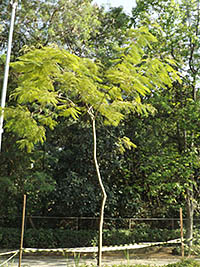

Zoologico de Guarulhos
Vegetação
Mutum do sudeste
Espécie endêmica da Mata Atlântica de baixada, passa a maior parte do tempo no solo, onde se alimenta de frutos e sementes, e se empoleira para dormir e nidificar. Atualmente é encontrado apenas em 11 localidades em Minas Gerais, Espírito Santo e Bahia, habitando matas primárias ou em avançada regeneração, sendo muito sensível à caça, alteração e fragmentação de seu habitat.
